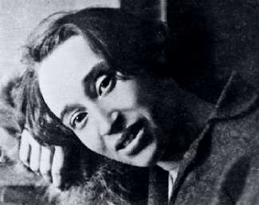

ДЕНЬ НАДЕЖДЫ
А меня под конец года всё не отпускает судьба Осипа Мандельштама, которого мы вспоминали позавчера. Сегодня я думаю про его «большеротого товарища», к которому обращено душераздирающее стихотворение про скворца и ореховый пирог — про Надежду Яковлевну Мандельштам, пережившую мужа на сорок с лишним лет. Она умерла 29 декабря 1980 года.
Я в календаре уже писал о классической российской трагедии: убитый гений и его осиротевшая спутница, доживающая в одиночестве долгий-предолгий век.
Но история вдовы Мандельштама не про это. Надежда Яковлевна не «доживала», она написала книгу, одну из самых сильных во всей отечественной литературе.
Я помню, как в восьмидесятые впервые прочитал письмо к убитому мужу («Теперь я даже на небо не смотрю. Кому показать, если увижу тучу?») и испытал сильное, не совсем понятное самому себе чувство что всё не зря. Как раз перед тем вышла безнадежная повесть Юрия Трифонова «Время и место» — про то, что «никому ничего не надо», ведь все умерли. Это был ответ.
Сегодня — День Надежды. На то, что все несчастья и страдания не напрасны и ничто, достойное памяти, не будет забыто. А иначе зачем вообще всё?